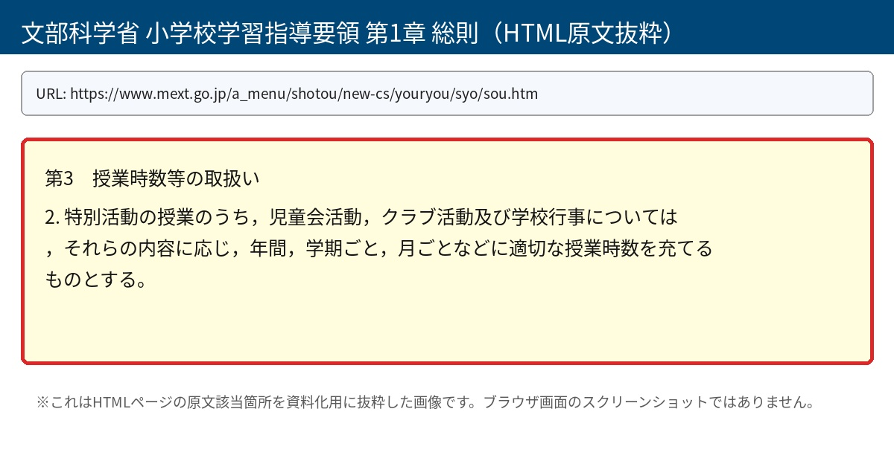
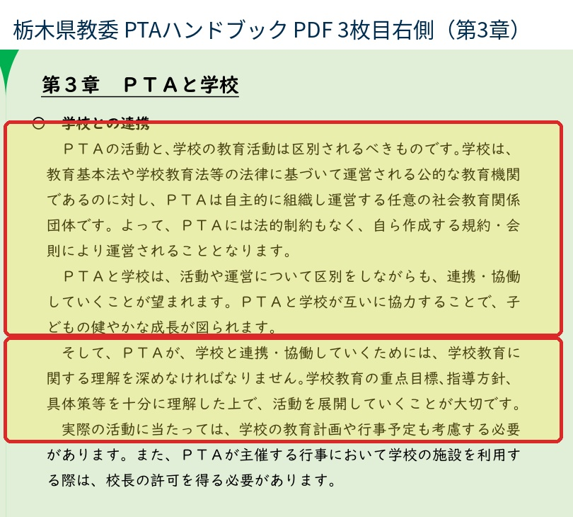
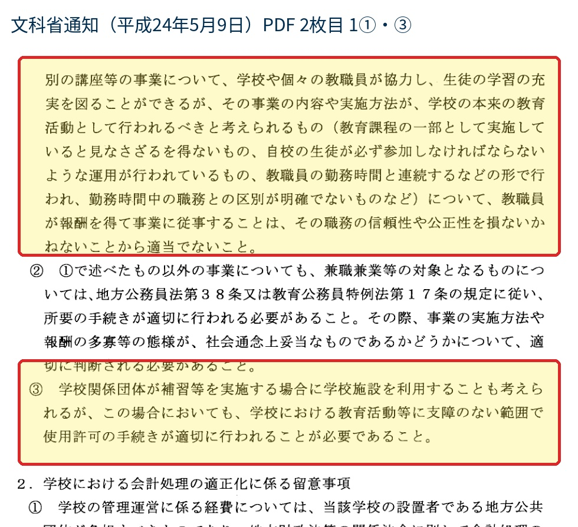
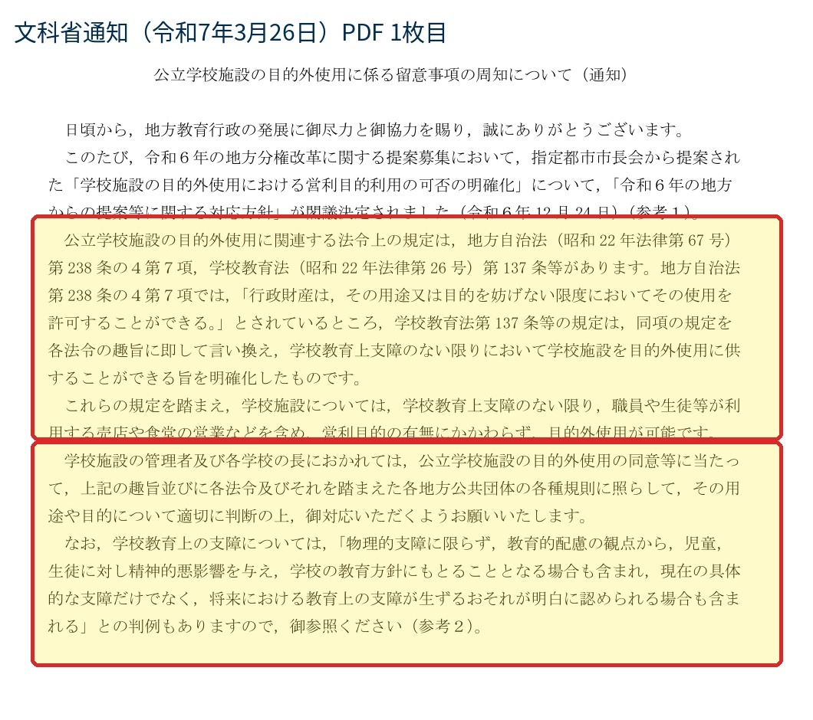
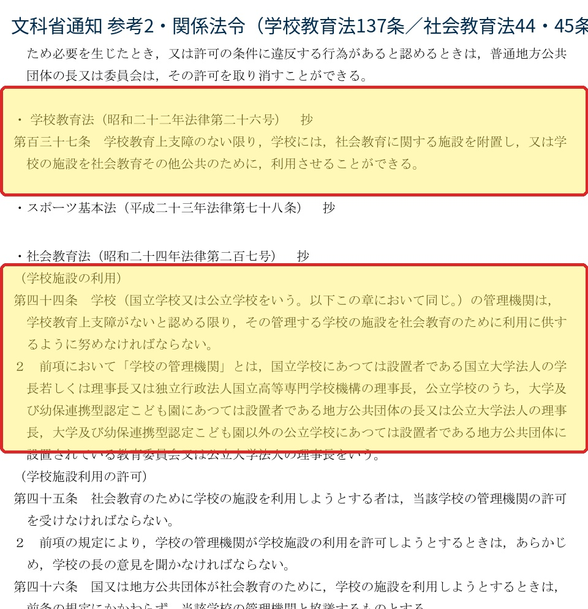

授業時間中に実施するなら、学校行事・学校教育活動として位置付ける必要があります。
PTA活動として実施するなら、授業時間中に児童生徒を参加させることは、学校教育活動との区別を曖昧にします。
1 授業時間中の活動は、教育課程上の位置付けが問われる
授業時間は、学校が編成した教育課程を実施する時間です。児童生徒がその時間に活動へ参加するのであれば、外形上、その活動は学校の教育活動又は学校管理下の活動として理解されます。
したがって、PTAが企画又は協力している活動であっても、授業時間中に児童生徒を参加させるのであれば、学校側は、その活動を学校行事、特別活動、授業参観の一環等としてどのように教育課程上位置付けるのかを説明する必要があります。
文部科学省の学習指導要領では、学校行事は特別活動の一部として扱われ、内容に応じて授業時数を充てるものとされています。つまり、授業時間中に行う活動を学校行事として扱うなら、学校の教育計画上の活動として整理される必要があります。逆に、PTA活動として扱うなら、学校の授業時間に児童生徒を参加させることは、教育課程との関係で説明が困難になります。
小学校学習指導要領 第1章 総則では、学校行事等について、「それらの内容に応じ、年間、学期ごと、月ごとなどに適切な授業時数を充てるものとする」とされています。
https://www.mext.go.jp/a_menu/shotou/new-cs/youryou/syo/sou.htm

2 PTA活動と学校教育活動は、同じ校内で行われても同一ではない
PTAは、学校に協力することがあり、学校と連携することもあります。しかし、PTAは学校そのものではなく、学校の附属機関でもありません。PTA活動と学校教育活動は、目的、責任主体、会員性、費用負担、個人情報の取扱いが異なります。
この区分が曖昧になると、保護者や児童生徒から見て、任意団体であるPTAの活動が、学校の授業又は学校行事であるかのように見えます。特に授業時間中に児童生徒が参加する場合、児童生徒は参加を拒みにくく、PTA非会員家庭の児童も含めて事実上参加を前提とする運用になりやすくなります。
栃木県教育委員会のPTAハンドブックは、PTA活動と学校教育活動について、両者は区別されるべきものと整理しています。この整理は、授業時間中のPTA関連活動を考えるうえで重要です。校内で行われるから学校活動になるのではなく、授業時間中に児童生徒を参加させるからには、学校教育活動としての位置付けが必要になります。
栃木県教育委員会「あすのPTAのためのハンドブック」では、「PTAの活動と、学校の教育活動は区別されるべきものです」と説明されています。また、学校は法律に基づく公的な教育機関であり、PTAは自主的に組織し運営する任意の社会教育関係団体である旨が示されています。
https://www.pref.tochigi.lg.jp/m06/documents/ptahandbookkaitei2.pdf

3 文部科学省通知が示す「混同してはならない境界」
文部科学省平成24年5月9日通知は、直接には、PTA等の学校関係団体が実施する補習等に関する兼職兼業、報酬、学校会計との区分を扱った通知です。しかし、授業時間中のPTA関連活動を考えるうえで重要なのは、通知が「学校関係団体の事業」と「学校の本来の教育活動」との境界を問題にしている点です。
同通知は、PTA等の学校関係団体が実施する事業であっても、教育課程の一部として実施していると見なさざるを得ないもの、自校の生徒が必ず参加しなければならないような運用、教職員の勤務時間中の職務との区別が明確でないものについては、問題があるとの考え方を示しています。
授業時間中に児童生徒を参加させるPTA関連活動は、この三つの観点に直接関係します。授業時間中であれば教育課程の一部と見えやすく、児童生徒は参加を拒みにくく、教職員が関与すれば勤務時間中の職務との区別も曖昧になります。したがって、活動の名称がPTA行事であっても、授業時間中に実施するのであれば、学校教育活動としての位置付けを明確にしなければなりません。
文部科学省通知のPDF2枚目・1①には、「教育課程の一部として実施していると見なさざるを得ないもの」「自校の生徒が必ず参加しなければならないような運用が行われているもの」「勤務時間中の職務との区別が明確でないもの」という観点が示されています。
https://www.mext.go.jp/content/20221011-mxt_syoto01_02.pdf

4 学校施設を使う場合も、PTA活動が当然に学校教育活動になるわけではない
PTA活動が学校施設内で行われることはあります。しかし、学校施設を使うことと、その活動が学校教育活動であることは別問題です。PTA活動として学校施設を利用する場合には、学校教育上の支障の有無、用途・目的の適切性、校長又は設置者による許可が問題になります。
文部科学省の公立学校施設の目的外使用に係る通知でも、学校施設の目的外使用は、学校教育上支障のない限りで可能とされています。ここで重要なのは、PTA活動が学校施設を使えるとしても、それは学校教育活動と同一視されることを意味しないという点です。
授業時間中に児童生徒を参加させる活動であれば、単なる施設使用の問題にとどまりません。学校施設を使うPTA活動なのか、学校が教育課程上実施する学校行事なのか、両者の整理が必要です。
文部科学省通知では、学校施設を目的外使用に供することについて、「学校教育上支障のない限り」とされ、用途や目的について適切に判断することが求められています。
https://www.mext.go.jp/content/20250326-mxt_chisui01-000041299_1.pdf


5 周年行事・記念撮影・授業参観との関係
周年行事や記念撮影は、学校にとって意味のある活動になり得ます。しかし、行事の意義があることと、PTA活動として授業時間中に児童生徒を参加させることは別問題です。学校教育活動として実施するのであれば、校長が学校行事として位置付け、教育課程上の整理と保護者への説明を行う必要があります。
たとえば、授業参観の一環として学校が実施する活動であれば、学校教育活動として整理する余地があります。その場合には、PTA会員・非会員の別によって児童生徒の扱いを変えることはできず、学校が責任をもって実施することになります。
他方で、PTA活動として実施するのであれば、授業時間中に児童生徒を参加させることは適切ではありません。児童生徒にとっては授業時間であり、学校管理下の時間です。PTA活動としての参加を求めるなら、学校教育活動と明確に区別される時間・方法で実施する必要があります。
周年行事であっても必要な整理
学校行事として実施する場合は、教育課程、授業時数、全児童への公平な扱い、費用負担、個人情報の取扱いを学校が整理します。PTA活動として実施する場合は、授業時間中に児童生徒を参加させることが、学校教育活動との区別を曖昧にします。
6 教職員の有給休暇扱いでは、児童生徒の授業時間の問題は解決しない
教職員が有給休暇を取得するかどうかは、教職員個人の勤務状態に関する問題です。しかし、授業時間中に児童生徒を参加させる活動については、教職員の勤務状態だけでなく、児童生徒の授業時間をどのように位置付けるかが問題になります。
教職員を有給休暇扱いにしたとしても、児童生徒の側から見れば、その時間は学校の授業時間であり、学校管理下の時間です。教職員の休暇処理によって、児童生徒の授業時間がPTA活動の時間に変わるわけではありません。
したがって、授業時間中に実施する活動については、教職員を有給休暇扱いにするかどうかではなく、活動そのものが学校行事・学校教育活動なのか、PTA活動なのかを先に明確にする必要があります。
7 確認事項
以上を踏まえ、授業時間中に実施されるPTA関連活動について、次の事項の確認が必要です。
- 当該活動は、学校行事・学校教育活動ですか。それともPTA活動ですか。
- 授業時間中に実施する場合、教育課程上どのように位置付けていますか。
- 学校行事・学校教育活動として実施する場合、PTA会員・非会員の別にかかわらず、全児童を学校の責任で公平に扱う理解でよいですか。
- PTA活動として実施する場合、授業時間中に児童生徒を参加させる根拠は何ですか。
- 教職員の関与は、校務としての職務ですか。それともPTA活動への協力ですか。
- 教職員を有給休暇扱いにして実施する予定がある場合、その扱いによって児童生徒の授業時間の位置付けがどのように整理されるのかを説明してください。
- 写真撮影、名簿利用、参加状況の把握等がある場合、個人情報の利用目的、保護者への説明、PTAへの提供の有無はどのように整理されていますか。
- PTA非会員家庭の児童について、参加、不参加、費用負担、記念品、写真の取扱い等に差異が生じないことをどのように担保していますか。
8 公式資料一覧
本資料で確認した一次資料及び参考資料の公式URLは次のとおりです。抜粋画像は当該箇所を確認しやすくするために掲載したものであり、正式な確認は各公式URLの原資料で行います。
- 文部科学省 平成24年5月9日通知「学校関係団体が実施する事業に係る兼職兼業等の取扱い及び学校における会計処理の適正化についての留意事項等について」
https://www.mext.go.jp/content/20221011-mxt_syoto01_02.pdf - 文部科学省 小学校学習指導要領 第1章 総則
https://www.mext.go.jp/a_menu/shotou/new-cs/youryou/syo/sou.htm - 文部科学省 小学校学習指導要領（平成29年告示）解説 特別活動編
https://www.mext.go.jp/content/20221213-mxt_kyoiku02-100002607_014.pdf - 栃木県教育委員会「あすのPTAのためのハンドブック」
https://www.pref.tochigi.lg.jp/m06/documents/ptahandbookkaitei2.pdf - 文部科学省 公立学校施設の目的外使用に係る留意事項の周知について
https://www.mext.go.jp/content/20250326-mxt_chisui01-000041299_1.pdf
確認の要旨
授業時間中に児童生徒を参加させるのであれば、学校行事・学校教育活動として位置付ける必要があります。
PTA活動として扱うのであれば、授業時間中に児童生徒を参加させることは、学校教育活動との区別を曖昧にします。
教職員の有給休暇扱い、周年行事であること、PTAが協力していることは、児童生徒の授業時間をPTA活動に使用する根拠にはなりません。
最初に確認すべきことは、「当該活動は学校行事・学校教育活動なのか、PTA活動なのか」です。